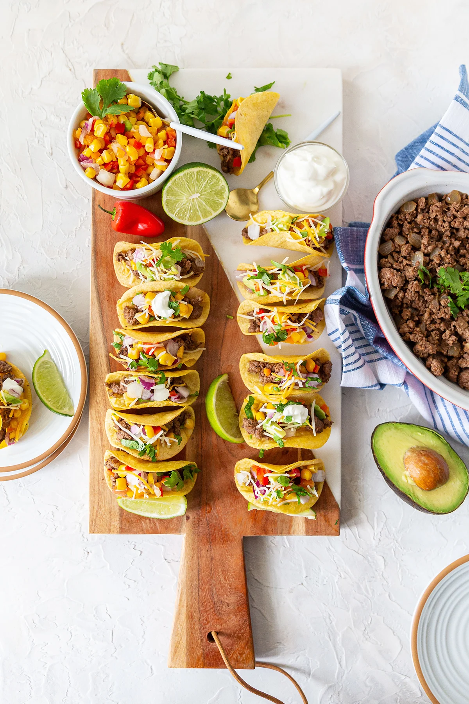

AboutLTS
LTS was founded in 2022. Our shop was built from love of tacos. We hope our shop adds a unique and interesting place to our little town.

LTS was founded in 2022. Our shop was built from love of tacos. We hope our shop adds a unique and interesting place to our little town.